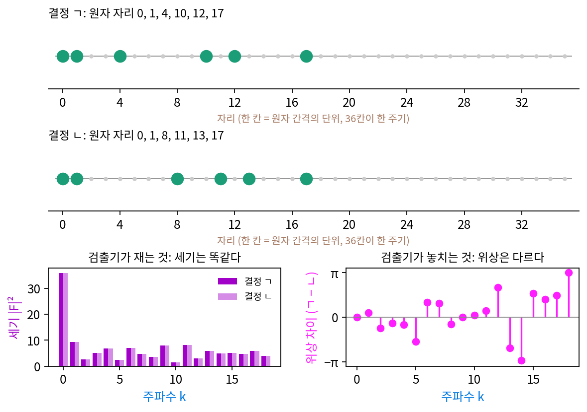
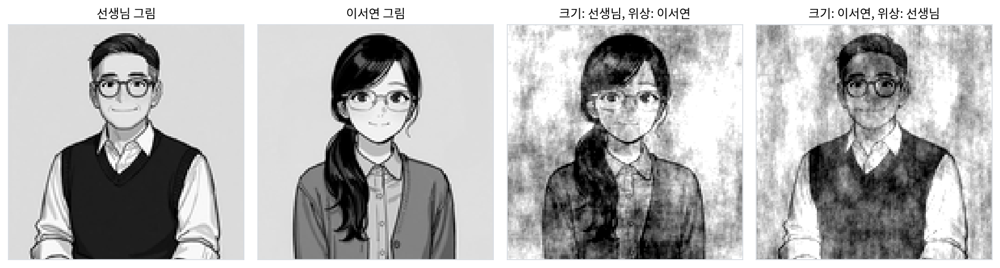
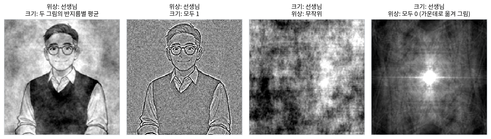
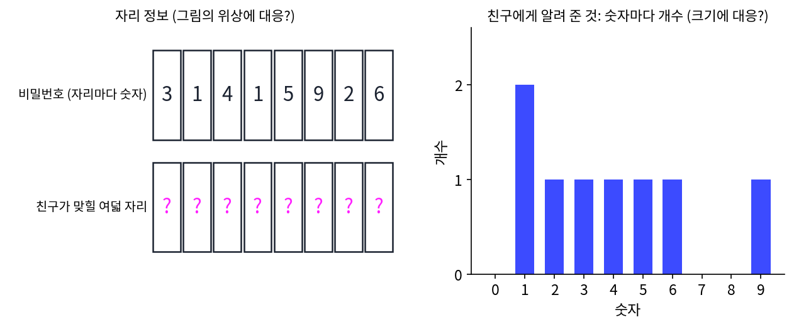
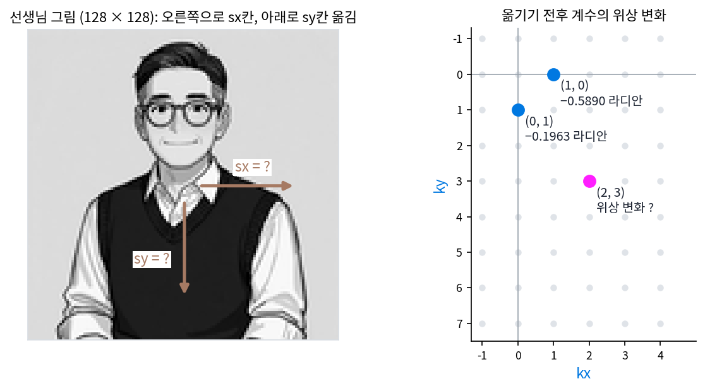
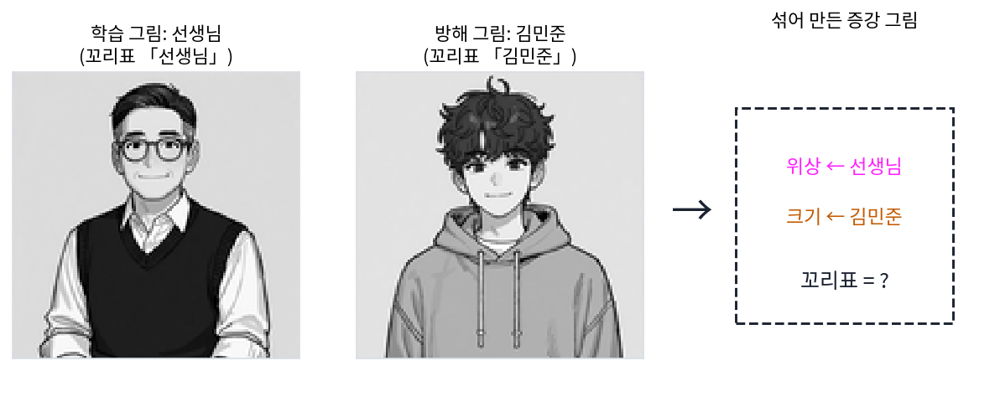
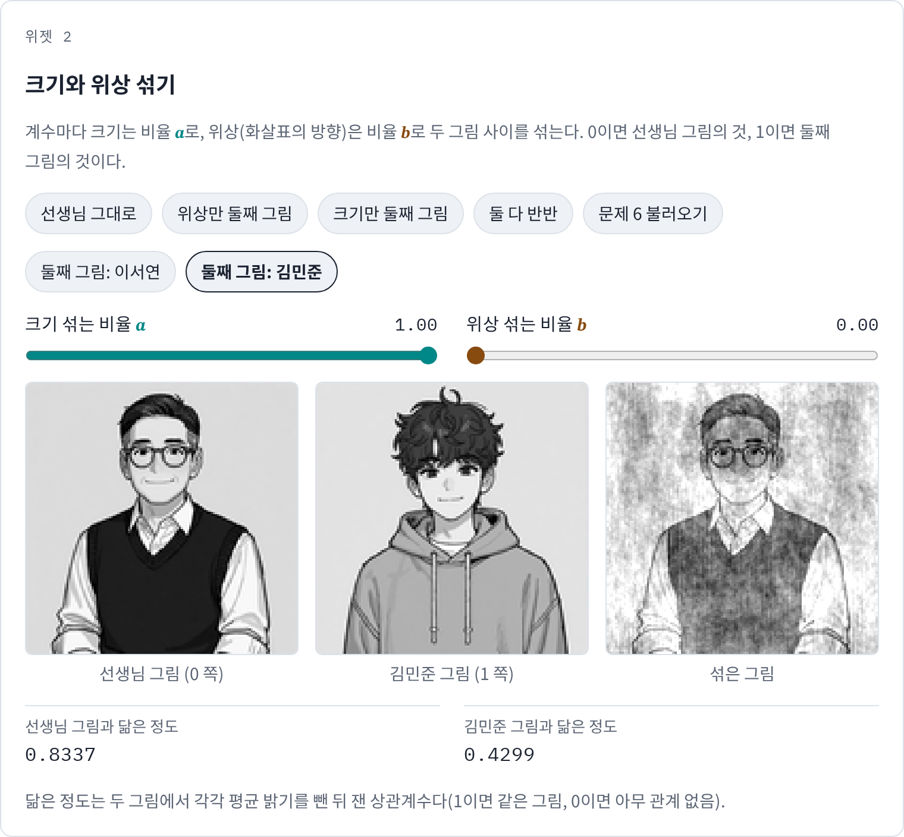

크기와 위상: 무엇이 그림을 알아보게 하나
지금까지 스펙트럼 그림은 계수의 크기 |F|만 칠했지만, 계수는 복소수라서 길이와 방향이 있는 평면의 화살표다. 길이는 그 물결이 얼마나 센지, 방향은 그 물결의 마루가 그림의 어디에 놓이는지(물결의 출발 자리)를 정한다. 스펙트럼 그림은 화살표의 방향을 버린 그림이다.
버린 것이 얼마나 중요한지 보려고 선생님 그림과 이서연 그림의 크기 |F|끼리 상관계수를 재면 0.83이다. 둘 다 굵은 무늬가 세고 가는 무늬가 약한, 사진이면 대개 그런 모양이라 크기는 서로 꽤 닮았다. 반대로 같은 자리 계수끼리 화살표 방향의 차이는 평균 1.54 라디안으로, 아무 관계 없는 두 방향의 평균 차이 π/2 = 1.57과 거의 같다. 크기는 닮았고 방향은 제각각인데, 두 그림은 누가 봐도 다른 사람이다.
역사: 세기만 잴 수 있었던 사람들
화살표의 방향을 잃고 길이만 손에 쥔 채 그림을 되살려야 했던 사람들이 있었으니, X선으로 결정의 구조를 알아내려던 결정학자들이다. 결정에 X선을 쬐면 사진판에 점무늬가 찍히는데, 이 점무늬가 결정 속 원자 배치의 스펙트럼이다. 그러나 사진판은 빛의 세기만 기록하므로, 점마다 계수의 크기는 알지만 방향(위상)은 모른다. 세기만 알고 위상은 모르는 이 어려움을 결정학의 「위상 문제」라 부른다. 미국 해군연구소에서 함께 일하던 하우프트만(Herbert Hauptman)과 칼(Jerome Karle)은 1950년대 초, 측정한 세기들 사이의 관계에서 위상을 추정하는 방정식들을 세웠다. 이 「직접법」으로 1985년 노벨 화학상을 함께 받았다. 위상을 모르면 구조를 모르고, 위상을 알아내는 일 자체가 노벨상을 받을 만큼 어려웠다.

신호처리 쪽에서 이 사정을 그림과 소리 모두에 대해 정리한 사람은 MIT의 오펜하임(Alan V. Oppenheim)과 임재수(Jae S. Lim)다. 두 사람은 1979년 학회(ICASSP)에서 동료들과 「소리와 그림의 위상」을 발표했고, 1981년 『IEEE 회보(Proceedings of the IEEE)』에 「신호에서 위상의 중요성(The importance of phase in signals)」을 실었다. 논문 요약에 따르면, 여러 경우에 위상만 남겨도 신호의 중요한 특징이 대부분 남고, 신호의 길이가 유한하다는 것 같은 조건이 있으면 위상만으로 신호를 상수배까지 완전히 되살릴 수 있다. 논문은 이것을 그림, 소리, 결정 구조에서 보였다. 한 그림의 크기와 다른 그림의 위상을 섞어 위상을 준 쪽이 보이는 실험은 이 논문과 함께 지금도 신호처리 수업마다 되풀이된다.

위상을 모르면 재면 되잖아요. 사진판 말고 위상까지 기록하는 장치를 쓰면요.

지금도 X선 검출기는 세기만 재요. 결정학에서 흔히 쓰는 X선은 파장이 0.15 nm 쯤이라 1초에 2 × 1018번쯤 출렁이는데, 그 마루가 지나가는 순간을 따라갈 장치가 없어요.

그럼 세기만 들고 위상을 맞혀야 하는데… 점마다 각도를 하나씩 골라야 하잖아요. 각도를 두 가지만 허락해도 점이 100개면 2100가지예요.

1.27 × 1030이요. 하나씩 대 보는 건 지금 컴퓨터로도 안 되겠네요.

그래서 하우프트만과 칼은 다 대 보는 대신, 세기들 사이의 관계에서 위상을 좁히는 식을 세웠어요. 오펜하임과 임재수의 실험은 사정이 반대였어요. 그림이 컴퓨터 안에 칸으로 있으니 위상을 일부러 버리거나 바꿔 볼 수 있었죠. 결정학자들은 처음부터 위상이 버려진 측정값만 쥐고 있었고요.

두 그림의 크기가 0.83만큼 닮았다고 했잖아요. 그럼 선생님 그림의 크기에 제 그림의 위상을 붙이면, 누가 보일까요?
선생님 그림과 이서연 그림의 크기와 위상을 맞바꾸기
계수 하나를 크기와 방향으로 나눠 적자.
선생님 그림의 크기 |F|에 이서연 그림의 위상 φ를 붙여 되돌리고, 거꾸로도 해 본다. 닮은 정도는 두 그림에서 평균 밝기를 빼고 잰 상관계수로 적는다(1이면 같은 그림, 0이면 아무 관계 없음). 원래 두 그림끼리는 0.4892다.
| 만든 그림 | 선생님 그림과 | 이서연 그림과 |
|---|---|---|
| 크기: 선생님, 위상: 이서연 | 0.5604 | 0.8478 |
| 크기: 이서연, 위상: 선생님 | 0.8478 | 0.4405 |

위상을 준 쪽이 보인다. 셋째 그림에는 포니테일과 사각테 안경이, 넷째 그림에는 동그란 안경과 조끼가 보인다. 크기를 준 쪽은 바탕에 얼룩진 밝기로만 흔적을 남긴다.
크기와 위상을 하나씩만 남기면 차이가 더 또렷하다.

| 만든 그림 | 선생님 그림과 닮은 정도 |
|---|---|
| 위상: 선생님, 크기: 두 그림의 반지름별 평균 | 0.8921 |
| 위상: 선생님, 크기: 모두 1 | 0.3277 |
| 크기: 선생님, 위상: 무작위(씨앗 고정) | 0.0853 |
| 크기: 선생님, 위상: 모두 0 | 0.3045 |
어느 그림의 것도 아닌 평균 크기에 선생님의 위상을 붙이면 선생님이 거의 그대로 돌아온다(0.89). 크기를 모두 1로 두어도 윤곽선만 남은 선생님이 보인다. 반대로 선생님의 크기에 무작위 위상을 붙이면 구름 같은 얼룩이고(0.09), 위상을 모두 0으로 두면 가운데에 모인 밝은 덩어리다.
왜 이렇게 될까? 그림 전체를 옮겨 보면 크기와 위상이 맡은 일이 갈린다. 선생님 그림을 오른쪽으로 10칸, 아래로 5칸 옮기면(밀려난 칸은 반대쪽으로 돌려 붙임) 계수의 크기는 하나도 바뀌지 않는다. 가장 큰 크기가 10518.5인데, 옮기기 전후 크기의 가장 큰 차이는 4.55 × 10−13으로 컴퓨터의 반올림 오차다. 바뀌는 것은 위상뿐이고, 옮긴 칸 수와 주파수 벡터를 곱해 더한 만큼 돈다.
(kx, ky) = (1, 0) 계수는 −2π × 10/128 = −0.4909 라디안(−28.13°)만큼 돌았다. 스크립트가 잰 값도 같다. 크기는 「어느 물결이 얼마나 센가」만 알고 「그 물결의 마루가 어디에 놓였나」는 모른다. 얼굴을 알아보게 하는 것은 눈, 안경테, 머리카락 경계가 그림의 어디에 있느냐이고, 그 「어디」가 모두 위상에 들어 있다. 이렇게 계수마다의 각도 φ를 주파수 벡터 평면 위에 늘어놓은 것을 위상 스펙트럼 (계수 화살표의 방향 / phase spectrum)이라 하고, 크기를 늘어놓은 것은 크기 스펙트럼이라 부른다.
ML에서: 크기를 흔들어도 같은 꼬리표
사람은 위상이 같으면 같은 그림으로 보니, 신경망도 그렇게 보도록 가르칠 수 있다. 2021년 천(Guangyao Chen)과 동료들은 「크기와 위상 다시 섞기(Amplitude-Phase Recombination)」에서, 합성곱 신경망은 노이즈나 흔한 그림 손상처럼 크기를 흔드는 변화에 약한 반면 사람은 위상에 더 기대어 알아본다는 관찰에서 출발했다. 그래서 학습 그림 하나의 위상에 다른 그림(방해 그림)의 크기를 붙인 그림을 만들어 학습 그림에 섞어 넣는 증강(학습 그림을 변형해 늘리는 일)을 제안했다. 논문은 이 증강이 흔한 손상, 분포 밖 그림 가려내기, 적대적 공격에 대한 버티기를 함께 좋게 했다고 보고했다. 새로 만든 그림에 어느 그림의 꼬리표를 달아야 하는지, 그 선택이 분류기에게 무엇을 가르치는지는 아래 문제 6에서 따져 본다.
같은 맞바꾸기를 반대 목적에 쓴 예도 있다. 2020년 양(Yanchao Yang)과 소아토(Stefano Soatto)는 꼬리표가 많은 합성 그림의 굵은 무늬 크기를 실제 사진의 것으로 바꿔 넣어, 합성 그림의 겉모습(색감과 밝기의 큰 흐름)만 실제 사진처럼 만들었다. 위상은 그대로이니 그림 속 물체의 자리와 꼬리표는 바뀌지 않는다.
문제 4. 숫자 개수만 알려 주면
친구에게 여덟 자리 비밀번호 3141 5926 을 알려 주는 대신 「1 이 두 개, 2, 3, 4, 5, 6, 9 가 하나씩」이라고만 알려 주었다. (가) 이 정보와 맞는 여덟 자리 수는 몇 개인가? 아무 정보가 없을 때(108 개)와 비교해 몇 비트를 알려 준 셈인가? (나) 「1111 2222」라면 개수 정보와 맞는 수는 몇 개인가? (다) 숫자의 개수와 자리를 그림의 크기 스펙트럼과 위상 스펙트럼에 대응시켜 보라.

(가)는 여덟 자리를 늘어놓는 경우의 수 8! = 40320 이요. 거의 다 알려 준 거 아니에요?
1 이 두 개라는 게 마음에 걸리지 않아요?
아, 1 둘을 서로 바꿔도 같은 수네요. 2! 로 나눠서 20160 개예요.
비트로 따지면요?
log₂ 로 14.30 비트, 아무 정보 없는 108 개는 26.58 비트니까 26.58 − 14.30 = 12.28 비트쯤 알려 준 거예요. 절반도 안 되네요.
(나)는 1 넷, 2 넷이니까 8!/(4! 4!) = 70 개야. 숫자가 고르게 섞일수록 개수만으로 남는 후보가 많고, 한쪽으로 쏠리면 적어.
(다)는요? 개수가 크기, 자리가 위상이라면요.

개수는 「무엇이 얼마나 들어 있나」고 자리는 「어디에 있나」예요. 크기 스펙트럼도 어느 물결이 얼마나 센지만 알지 마루가 어디 있는지는 몰라요. 그래서 선생님 그림의 크기만으로는 구름 같은 얼룩밖에 못 만들었고요.

비밀번호는 개수 정보만으로도 후보가 1억 개에서 20160 개로 줄었어요. 그림에서는 크기가 후보를 얼마나 줄여 줄까요? 사진들의 크기가 서로 얼마나 닮았는지 떠올려 보세요.

선생님 그림과 제 그림의 크기가 0.83만큼 닮았었어요. 사진이면 대개 비슷한 크기를 가지니까, 크기는 「이건 사진이다」 정도만 알려 주고 「누구 사진이다」는 거의 안 알려 주는 거네요. 모든 사람의 비밀번호가 「1 이 두 개…」로 시작하는 거나 마찬가지예요.
문제 5. 옮긴 칸 수를 위상에서 읽기
선생님 그림을 오른쪽으로 sx칸, 아래로 sy칸 옮겼다(밀려난 칸은 반대쪽으로 돌려 붙임). 옮기기 전후 (kx, ky) = (1, 0) 계수의 위상은 −0.5890 라디안, (0, 1) 계수의 위상은 −0.1963 라디안 바뀌었다. (가) sx, sy 를 구하라. (나) (2, 3) 계수의 위상 변화를 예측하고, 그 위상 변화와 같은 만큼 도는 계수를 둘 더 찾아라. (다) 그림을 오른쪽으로 70칸 옮겼을 때 (1, 0) 계수의 위상 변화는 2.8471 라디안으로 재졌다. 이 값으로 옮긴 칸 수를 구하면? (라) 크기 스펙트럼만 보고 옮긴 칸 수를 알 수 있는가?

(가)는 −2πsx/128 = −0.5890 에서 sx = 0.5890 × 128/(2π) = 12, 같은 식으로 sy = 4야.
(나)는 −2π(2 × 12 + 3 × 4)/128 = −2π × 36/128 = −1.7671 라디안이요. 스크립트도 −1.7671 이에요. 그런데 같은 만큼 도는 계수는…
36 을 만드는 다른 (kx, ky) 가 있을까요?

3 × 12 + 0 × 4 = 36 이니까 (3, 0), 1 × 12 + 6 × 4 = 36 이니까 (1, 6)이요. 스크립트로도 셋 다 −1.7671 이에요.
셋 다 12kx + 4ky 가 36이네. 그 값이 같으면 모두 같은 각도만큼 도는 거구나.
그런 계수들을 주파수 벡터 평면에 찍으면 어떤 모양이 될까요?

곧은 줄 하나 위에 있겠네요.
(다)는 −2.8471 × 128/(2π)를 하면… −58 이야. 왼쪽으로 58칸?
70칸 옮겼다고 했는데요. −58 과 70 은 무슨 관계일까요?

70 − 128 = −58 이에요. 딱 128칸 차이네요.
128칸을 옮기면 (1, 0) 계수의 위상은 얼마나 돌죠?
한 바퀴(2π)요. 아, 각도는 한 바퀴마다 같은 값이 되니까, 오른쪽 70칸과 왼쪽 58칸은 돌려 붙인 그림에서는 같은 옮김이에요. 128칸 그림을 끝없이 되풀이된다고 보면 둘은 정말 구별이 안 되고요.

그럼 몇 칸부터 반대쪽으로 읽혀?
각도를 (−π, π] 안에서 읽으면 64칸이 넘는 옮김부터야.
(라)는 크기가 하나도 안 바뀌니까 못 알아요. (12, 4)로 옮긴 그림과 (−20, 40)으로 옮긴 그림의 크기 차이도 2.27 × 10−13이에요.
그럼 두 그림이 얼마나 옮겨졌는지 찾고 싶으면 어떻게 하면 될까요? 크기는 쓸모가 없고 위상 차이에 옮김이 다 들어 있다면요.

위상 차이만 남기려면… 두 그림의 계수에서 위상 차이만 두고 크기는 모두 1로 두면 되나요?
그렇게 남긴 계수를 그림으로 되돌리면 무엇이 보일까요? 모든 주파수가 같은 옮김을 가리키고 있어요.
모든 주파수가 같은 옮김을 가리키니까 (12, 4) 칸 하나만 밝겠네요. 해 보니 정말 (12, 4) 칸이 1.0000 이고 나머지는 모두 0이에요.
위상 차이만 남긴 그림이 곧 「어디로 옮겼나」의 답이야. 소리를 몇 칸 늦게 틀어도 스펙트럼의 크기는 그대로이고 위상만 돌던 것과 같은 계산이네. 그림은 옮기는 방향이 둘이라 위상도 두 방향으로 돌 뿐이고.
문제 6. 증강 그림에 꼬리표 달기
그림 분류기를 학습시키며 크기·위상 섞기 증강을 쓴다. 학습 그림은 선생님 그림(꼬리표 「선생님」), 방해 그림은 김민준 그림(꼬리표 「김민준」)이다. 선생님 그림의 위상에 김민준 그림의 크기를 붙인 그림을 만든다. (가) 이 그림은 두 그림과 각각 얼마나 닮았는가? (나) 이 그림에 어느 꼬리표를 달아야 하는가? 반대로 달면 분류기는 무엇을 배우게 되는가? (다) 꼬리표를 「선생님 0.5, 김민준 0.5」처럼 반반으로 다는 방법도 있다. 이 증강에서는 왜 알맞지 않은가? (위젯 2의 「문제 6 불러오기」로 이 그림을 볼 수 있다.)

(가)는 위젯에서 불러왔어요. 선생님과 0.8337, 저와 0.4299요. 원래 선생님 그림과 제 그림끼리는 0.3586 이고요. 그런데 크기는 제 거니까 반반 섞인 거 아닌가요? (다)처럼 반반 꼬리표가 공평해 보이는데요.
위젯의 섞은 그림을 보면 누가 보여요?
선생님이요. 바탕에 얼룩이 좀 있고요. 숫자도 선생님 쪽이 두 배 가까이 크네요.
그러니까 (나)는 「선생님」이야. 사람 눈에 선생님으로 보이는 그림에 「김민준」을 달면, 분류기한테 「크기만 보고 답해라」를 가르치는 거고.

반반 꼬리표는 두 그림의 칸 밝기를 반반 섞을 때 쓰는 방법이에요. 칸 밝기를 반반 섞은 그림과 이 증강 그림은 무엇이 다를까요?
칸을 반반 섞으면 선생님 얼굴과 민준 얼굴이 겹쳐 보이니까 반반 꼬리표가 맞아요. 이 증강은 위상을 모두 한쪽에서 가져와서 한 얼굴만 보이고요.
한 얼굴만 보이는 그림에 반반 꼬리표를 달면, 분류기는 김민준의 반을 어디서 찾을까요?
크기밖에 없네요. 그럼 분류기가 크기에서 김민준을 반쯤 읽어 내도록 배워요. 우리가 없애려던 게 크기만 보고 답하는 판단인데요.
과제 보고서에 표지만 다른 사람 걸로 바꿔 붙이면 내용 쓴 사람이 저자인 거랑 같네요. 표지가 크기고 내용이 위상이에요.
